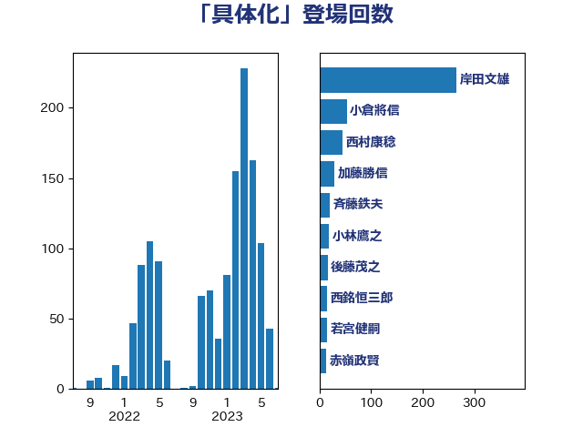

単語「具体化」

| 岸田文雄 | 自由民主党 | 265 回 |
| 小倉將信 | 自由民主党 | 53 回 |
| 西村康稔 | 自由民主党 | 44 回 |
| 加藤勝信 | 自由民主党 | 29 回 |
| 斉藤鉄夫 | 公明党 | 20 回 |
| 小林鷹之 | 自由民主党 | 19 回 |
| 後藤茂之 | 自由民主党 | 16 回 |
| 西銘恒三郎 | 自由民主党 | 15 回 |
| 若宮健嗣 | 自由民主党 | 15 回 |
| 赤嶺政賢 | 日本共産党 | 14 回 |
| 和田義明 | 自由民主党 | 14 回 |
| 岡田直樹 | 自由民主党 | 12 回 |
| 高橋千鶴子 | 日本共産党 | 11 回 |
| 鈴木俊一 | 自由民主党 | 11 回 |
| 萩生田光一 | 自由民主党 | 11 回 |
| 浅野哲 | 国民民主党 | 11 回 |
| 林芳正 | 自由民主党 | 11 回 |
| 松野博一 | 自由民主党 | 11 回 |
| 末松信介 | 自由民主党 | 11 回 |
| 山本太郎 | れいわ新選組 | 10 回 |
| 塩川鉄也 | 日本共産党 | 10 回 |
| 紙智子 | 日本共産党 | 9 回 |
| 笠井亮 | 日本共産党 | 9 回 |
| 山口壯 | 自由民主党 | 8 回 |
| 齋藤健 | 自由民主党 | 7 回 |
| 野村哲郎 | 自由民主党 | 7 回 |
| 浜田靖一 | 自由民主党 | 7 回 |
| 松本剛明 | 自由民主党 | 7 回 |
| 宮本徹 | 日本共産党 | 7 回 |
| 谷公一 | 自由民主党 | 6 回 |
| 西村明宏 | 自由民主党 | 6 回 |
| 大野敬太郎 | 自由民主党 | 6 回 |
| 中野洋昌 | 公明党 | 6 回 |
| 高市早苗 | 自由民主党 | 5 回 |
| 野田聖子 | 自由民主党 | 5 回 |
| 石川博崇 | 公明党 | 5 回 |
| 田村智子 | 日本共産党 | 5 回 |
| 永岡桂子 | 自由民主党 | 5 回 |
| 山崎誠 | 立憲民主党 | 5 回 |
| 城井崇 | 立憲民主党 | 5 回 |
| 國重徹 | 公明党 | 5 回 |
| 古川禎久 | 自由民主党 | 5 回 |
| 井野俊郎 | 自由民主党 | 5 回 |
| 高橋光男 | 公明党 | 4 回 |
| 金子恭之 | 自由民主党 | 4 回 |
| 西岡秀子 | 国民民主党 | 4 回 |
| 葉梨康弘 | 自由民主党 | 4 回 |
| 矢倉克夫 | 公明党 | 4 回 |
| 玉木雄一郎 | 国民民主党 | 4 回 |
| 河西宏一 | 公明党 | 4 回 |
| 本庄知史 | 立憲民主党 | 4 回 |
| 木村次郎 | 自由民主党 | 4 回 |
| 川田龍平 | 立憲民主党 | 4 回 |
| 岩渕友 | 日本共産党 | 4 回 |
| 山田俊男 | 自由民主党 | 4 回 |
| 堀場幸子 | 日本維新の会 | 4 回 |
| 舟山康江 | 国民民主党 | 3 回 |
| 自見はなこ | 自由民主党 | 3 回 |
| 穀田恵二 | 日本共産党 | 3 回 |
| 秋野公造 | 公明党 | 3 回 |
| 柴愼一 | 立憲民主党 | 3 回 |
| 小沼巧 | 立憲民主党 | 3 回 |
| 寺田稔 | 自由民主党 | 3 回 |
| 伊波洋一 | 無所属 | 3 回 |
| 仁比聡平 | 日本共産党 | 3 回 |
| 中谷真一 | 自由民主党 | 3 回 |
| 三木圭恵 | 日本維新の会 | 3 回 |
| 高木真理 | 立憲民主党 | 2 回 |
| 高木啓 | 自由民主党 | 2 回 |
| 里見隆治 | 公明党 | 2 回 |
| 足立康史 | 日本維新の会 | 2 回 |
| 藤井比早之 | 自由民主党 | 2 回 |
| 福田昭夫 | 立憲民主党 | 2 回 |
| 福島伸享 | 無所属 | 2 回 |
| 福山哲郎 | 立憲民主党 | 2 回 |
| 礒崎哲史 | 国民民主党 | 2 回 |
| 石井章 | 日本維新の会 | 2 回 |
| 猪瀬直樹 | 日本維新の会 | 2 回 |
| 牧山ひろえ | 立憲民主党 | 2 回 |
| 熊谷裕人 | 立憲民主党 | 2 回 |
| 清水貴之 | 日本維新の会 | 2 回 |
| 武部新 | 自由民主党 | 2 回 |
| 森本真治 | 立憲民主党 | 2 回 |
| 柳本顕 | 自由民主党 | 2 回 |
| 杉尾秀哉 | 立憲民主党 | 2 回 |
| 末次精一 | 立憲民主党 | 2 回 |
| 木原誠二 | 自由民主党 | 2 回 |
| 平木大作 | 公明党 | 2 回 |
| 川合孝典 | 国民民主党 | 2 回 |
| 島村大 | 自由民主党 | 2 回 |
| 岩田和親 | 自由民主党 | 2 回 |
| 小西洋之 | 立憲民主党 | 2 回 |
| 太田房江 | 自由民主党 | 2 回 |
| 大野泰正 | 自由民主党 | 2 回 |
| 務台俊介 | 自由民主党 | 2 回 |
| 前原誠司 | 国民民主党 | 2 回 |
| 倉林明子 | 日本共産党 | 2 回 |
| 伊藤孝恵 | 国民民主党 | 2 回 |
| 井上哲士 | 日本共産党 | 2 回 |
| 中村裕之 | 自由民主党 | 2 回 |
| 上野通子 | 自由民主党 | 2 回 |
| 上川陽子 | 自由民主党 | 2 回 |
| 三浦靖 | 自由民主党 | 2 回 |
| 三浦信祐 | 公明党 | 2 回 |
| 黄川田仁志 | 自由民主党 | 1 回 |
| 鰐淵洋子 | 公明党 | 1 回 |
| 高見康裕 | 自由民主党 | 1 回 |
| 高良鉄美 | 無所属 | 1 回 |
| 高橋はるみ | 自由民主党 | 1 回 |
| 須藤元気 | 無所属 | 1 回 |
| 音喜多駿 | 日本維新の会 | 1 回 |
| 青木愛 | 立憲民主党 | 1 回 |
| 阿部知子 | 立憲民主党 | 1 回 |
| 阿部司 | 日本維新の会 | 1 回 |
| 門山宏哲 | 自由民主党 | 1 回 |
| 鈴木義弘 | 国民民主党 | 1 回 |
| 金子恵美 | 立憲民主党 | 1 回 |
| 野田佳彦 | 立憲民主党 | 1 回 |
| 野上浩太郎 | 自由民主党 | 1 回 |
| 遠藤良太 | 日本維新の会 | 1 回 |
| 進藤金日子 | 自由民主党 | 1 回 |
| 谷田川元 | 立憲民主党 | 1 回 |
| 谷川とむ | 自由民主党 | 1 回 |
| 西野太亮 | 自由民主党 | 1 回 |
| 藤木眞也 | 自由民主党 | 1 回 |
| 藤丸敏 | 自由民主党 | 1 回 |
| 菅家一郎 | 自由民主党 | 1 回 |
| 茂木敏充 | 自由民主党 | 1 回 |
| 若松謙維 | 公明党 | 1 回 |
| 舩後靖彦 | れいわ新選組 | 1 回 |
| 美延映夫 | 日本維新の会 | 1 回 |
| 緑川貴士 | 立憲民主党 | 1 回 |
| 竹内真二 | 公明党 | 1 回 |
| 秋葉賢也 | 自由民主党 | 1 回 |
| 神谷裕 | 立憲民主党 | 1 回 |
| 石川大我 | 立憲民主党 | 1 回 |
| 石井苗子 | 日本維新の会 | 1 回 |
| 石井正弘 | 自由民主党 | 1 回 |
| 石井拓 | 自由民主党 | 1 回 |
| 石井啓一 | 公明党 | 1 回 |
| 田嶋要 | 立憲民主党 | 1 回 |
| 田島麻衣子 | 立憲民主党 | 1 回 |
| 牧義夫 | 立憲民主党 | 1 回 |
| 片山さつき | 自由民主党 | 1 回 |
| 渡辺周 | 立憲民主党 | 1 回 |
| 渡辺創 | 立憲民主党 | 1 回 |
| 清水真人 | 自由民主党 | 1 回 |
| 浜野喜史 | 国民民主党 | 1 回 |
| 浅田均 | 日本維新の会 | 1 回 |
| 泉健太 | 立憲民主党 | 1 回 |
| 河野義博 | 公明党 | 1 回 |
| 河野太郎 | 自由民主党 | 1 回 |
| 沢田良 | 日本維新の会 | 1 回 |
| 水野素子 | 立憲民主党 | 1 回 |
| 水岡俊一 | 立憲民主党 | 1 回 |
| 櫛渕万里 | れいわ新選組 | 1 回 |
| 森山浩行 | 立憲民主党 | 1 回 |
| 柴田巧 | 日本維新の会 | 1 回 |
| 柚木道義 | 立憲民主党 | 1 回 |
| 枝野幸男 | 立憲民主党 | 1 回 |
| 松山政司 | 自由民主党 | 1 回 |
| 東徹 | 日本維新の会 | 1 回 |
| 杉本和巳 | 日本維新の会 | 1 回 |
| 本田顕子 | 自由民主党 | 1 回 |
| 本村伸子 | 日本共産党 | 1 回 |
| 木村英子 | れいわ新選組 | 1 回 |
| 星北斗 | 自由民主党 | 1 回 |
| 日下正喜 | 公明党 | 1 回 |
| 新妻秀規 | 公明党 | 1 回 |
| 斎藤洋明 | 自由民主党 | 1 回 |
| 斎藤アレックス | 国民民主党 | 1 回 |
| 志位和夫 | 日本共産党 | 1 回 |
| 平山佐知子 | 無所属 | 1 回 |
| 岡本あき子 | 立憲民主党 | 1 回 |
| 山田太郎 | 自由民主党 | 1 回 |
| 山本香苗 | 公明党 | 1 回 |
| 山本剛正 | 日本維新の会 | 1 回 |
| 山岡達丸 | 立憲民主党 | 1 回 |
| 山口那津男 | 公明党 | 1 回 |
| 山下貴司 | 自由民主党 | 1 回 |
| 山下芳生 | 日本共産党 | 1 回 |
| 尾身朝子 | 自由民主党 | 1 回 |
| 小野泰輔 | 日本維新の会 | 1 回 |
| 小田原潔 | 自由民主党 | 1 回 |
| 小沢雅仁 | 立憲民主党 | 1 回 |
| 小池晃 | 日本共産党 | 1 回 |
| 小森卓郎 | 自由民主党 | 1 回 |
| 小林茂樹 | 自由民主党 | 1 回 |
| 小川淳也 | 立憲民主党 | 1 回 |
| 宮本岳志 | 日本共産党 | 1 回 |
| 室井邦彦 | 日本維新の会 | 1 回 |
| 安江伸夫 | 公明党 | 1 回 |
| 大島敦 | 立憲民主党 | 1 回 |
| 大口善徳 | 公明党 | 1 回 |
| 大串博志 | 立憲民主党 | 1 回 |
| 塩崎彰久 | 自由民主党 | 1 回 |
| 吉良よし子 | 日本共産党 | 1 回 |
| 吉川元 | 立憲民主党 | 1 回 |
| 吉川ゆうみ | 自由民主党 | 1 回 |
| 吉井章 | 自由民主党 | 1 回 |
| 古川直季 | 自由民主党 | 1 回 |
| 勝目康 | 自由民主党 | 1 回 |
| 加藤鮎子 | 自由民主党 | 1 回 |
| 八木哲也 | 自由民主党 | 1 回 |
| 佐藤正久 | 自由民主党 | 1 回 |
| 佐々木さやか | 公明党 | 1 回 |
| 伊東信久 | 日本維新の会 | 1 回 |
| 井坂信彦 | 立憲民主党 | 1 回 |
| 中西祐介 | 自由民主党 | 1 回 |
| 中田宏 | 自由民主党 | 1 回 |
| 中川宏昌 | 公明党 | 1 回 |
| 下村博文 | 自由民主党 | 1 回 |
| 上田勇 | 公明党 | 1 回 |
| 三上えり | 立憲民主党 | 1 回 |
| ながえ孝子 | 無所属 | 1 回 |